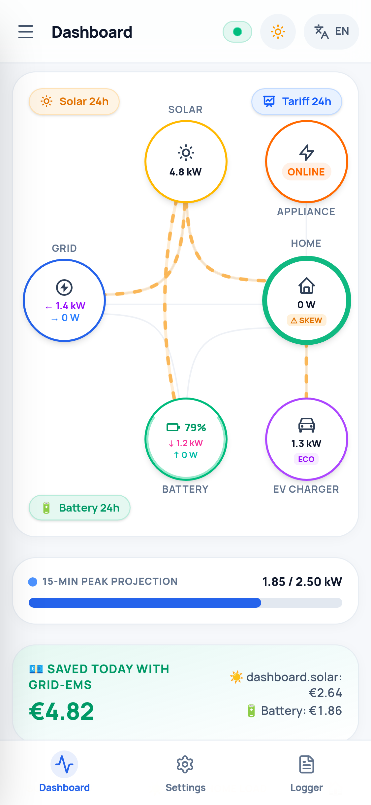
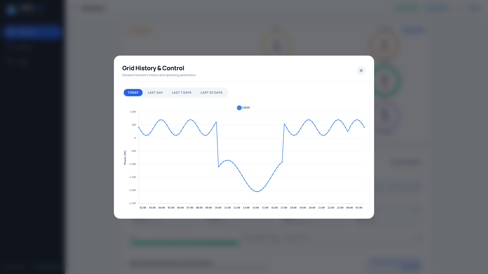

Manuel d'Utilisation & Pilotage du Tableau de Bord
Découvrez l'exploitation quotidienne de GEMS : lecture du synoptique animé PowerFlow, consultation des graphiques historiques détaillés en un clic, pilotage des bornes VE par Modbus TCP ou OCPP natif et exportation de rapports énergétiques PDF.
Vous préférez un livret imprimé ou un guide de référence sur tablette ? Téléchargez le Manuel Utilisateur & Paramètres GEMS (PDF) complet avec schémas PowerFlow haute définition, fenêtres d'historique et modes de charge VE.
1. Tableau de bord & Synoptique Interactif PowerFlow
Le Tableau de bord constitue le centre névralgique de GEMS : il représente vos flux d'énergie en temps réel par des lignes animées dont la vitesse et le sens reflètent instantanément la puissance échangée.


Affichage dynamique des nœuds matériels & Alertes Télémétrie Obsolète / Hors Ligne
Conformément à nos standards ergonomiques, chaque nœud matériel (Réseau, Onduleurs solaires, Batterie domestique, Bornes VE, Pompe à chaleur, Relais intelligents) n'apparaît que lorsqu'il est configuré et communique activement. En cas de données obsolètes ou de perte de connexion d'un équipement, GEMS affiche une bannière d'alerte dédiée, exclut les appareils hors ligne des totaux instantanés et applique des limites sécurisées pour les bornes VE sur 1×230V, 3×230V Delta et 3×400V+N. Un clic sur le nœud Batterie ouvre également la prévision 24h (incluant solar_hold), tandis que les bornes (comme Raedian) prennent en charge les objectifs de départ côté borne (+kWh avant HH:MM, sans API véhicule).
2. Graphiques Historiques au Clic & Superposition Réseau
Un simple clic sur n'importe quel nœud du synoptique PowerFlow (par exemple Solaire ou Batterie) ouvre immédiatement la fenêtre modale d'Analyse Historique Haute Résolution.




Dans chaque fenêtre graphique, cliquez sur le bouton ⚡ Comparer avec le Réseau pour superposer vos courbes de prélèvement et d'injection réseau directement sur la production solaire ou le cycle batterie. Vous visualisez ainsi immédiatement comment chaque pic de consommation domestique a été compensé.
Sélecteur de Période & Résolution Temporelle
- Dernière heure (résolution 1 min) : Granularité fine pour analyser les pointes instantanées et le démarrage des appareils électroménagers.
- Dernières 24 heures (résolution 5 min) : Courbe solaire journalière complète, cycles de charge/décharge batterie (SoC) et sessions de charge VE.
- 7 derniers jours (résolution 15 min) : Tendances hebdomadaires d'autoconsommation et répartition des quarts d'heure capacitaires.
- 30 derniers jours (résolution 1 h) : Bilans énergétiques mensuels et volumes cumulés d'importation et d'injection.
3. Moniteur de Pointe Quart-Horaire (Tarif Capacitaire Flandre)
Situé juste sous le synoptique PowerFlow, le moniteur capacitaire suit en temps réel la demande moyenne sur 15 minutes mesurée par votre compteur numérique.
| Badge d'état | Condition | Action du contrôleur GEMS |
|---|---|---|
| NORMAL | Pointe projetée < 80 % de capacity_peak_limit_kw |
Fonctionnement nominal. Toutes les bornes VE et batteries suivent leurs consignes habituelles. |
| AVERTISSEMENT | Pointe projetée comprise entre 80 % et 99 % du plafond | Vigilance préventive. Toute augmentation supplémentaire du courant de charge est suspendue pour éviter un dépassement. |
| BRIDÉ | Pointe projetée ≥ 100 % du plafond configuré | Écrêtage actif enclenché ! Réduction progressive des bornes VE (16A → 10A → 6A → 0A) et décharge de la batterie domestique pour couvrir l'appel de puissance. |
4. Gestion des Appareils & Assistant d'Intégration
Pour ajouter un nouvel équipement ou modifier une connexion existante, accédez à Paramètres → Appareils.
- Cliquez sur le bouton Ajouter un appareil énergétique en haut à droite.
- Sélectionnez le modèle correspondant parmi les 180 profils constructeurs préconfigurés (par ex. Solis Hybrid Inverter, RAEDIAN Wallbox, Compteur P1 Fluvius, Shelly Pro 3EM).
- Renseignez l'adresse IP (ou le port série), le port TCP (
502par défaut en Modbus TCP) et l'identifiant esclave Modbus. (Remarque : pour une borne OCPP, saisissez simplement son ChargePoint ID). - Cliquez sur Tester la connexion pour valider immédiatement l'accessibilité réseau.
- Cliquez sur Enregistrer. Le moteur Go démarre aussitôt l'acquisition périodique des mesures.
5. Scanner Matériel Réseau Local & Ports Série
La détection des adaptateurs série RS-485 / P1 ou des adresses IP locales de vos onduleurs et bornes VE est entièrement automatisée grâce au Scanner matériel intégré.

- Découverte Ports Série & RS-485 : Cliquez sur Analyser les ports série pour identifier automatiquement les compteurs P1 DSMR / e-MUCS ainsi que les équipements Modbus RTU RS-485 (tels que les onduleurs hybrides Solis, les bornes RAEDIAN et les compteurs sur rail DIN), avec chemins persistants
/dev/serial/by-id/*, vitesse en bauds, parité et ID esclave Modbus. Cliquez sur + Configurer pour pré-remplir le formulaire en un clic, ou lancez un Balayage RS-485 avancé. - Analyse du sous-réseau LAN : Cliquez sur Analyser le sous-réseau pour détecter les équipements Ethernet et Wi-Fi actifs sur votre réseau local (ex.
192.168.1.0/24) avec identification constructeur MAC et badges de ports ouverts (502,80/443,8887).
6. Sonde d'Accessibilité Modbus TCP (`Test Connection`)
Avant d'enregistrer un équipement dans SQLite, GEMS permet d'exécuter un test diagnostique instantané :
- Établit une connexion TCP directe vers l'adresse IP et le port cibles.
- Mesure le temps de réponse aller-retour en millisecondes ($ms$).
- Tente une lecture de l'identifiant standard SunSpec Modbus (registre
40001/0x9C41) afin de confirmer que l'ID esclave configuré répond correctement.
7. Recharge VE : Modbus TCP (Recommandé) & Serveur OCPP Natif
GEMS pilote la recharge de votre véhicule électrique en temps réel afin de maximiser l'autoconsommation solaire et d'éviter tout dépassement de pointe. Les bornes peuvent être raccordées via Modbus TCP (méthode privilégiée) ou via le Serveur OCPP Natif embarqué.
Le protocole Modbus TCP est la solution recommandée pour le pilotage local des bornes VE :
- Modulation instantanée inférieure à la seconde : Les registres Modbus permettent à GEMS de lire les courants par phase et d'ajuster la consigne d'ampérage (6A à 32A) sans latence WebSocket — essentiel pour stopper les pointes quart-horaires immédiatement.
- Coexistence avec le remboursement employeur (Split-Billing) & CPO externe : Si votre borne est déjà reliée en OCPP à une plateforme de facturation CPO externe ou à un service de remboursement employeur, vous n'avez pas besoin de la déconnecter. GEMS régule localement la puissance en Modbus TCP tandis que la télérelève comptable se poursuit sans interruption via OCPP.
- Marques compatibles : RAEDIAN Gemini/NEO/NEX, Alfen Eve, KEBA KeContact P30/P40, Mennekes AMTRON, Webasto Live/Next, ABB Terra AC, Phoenix Contact CHARX, Veton, SolarEdge Home EVSE et bornes Modbus TCP génériques.
Mise en route : activez Modbus TCP dans l'application installateur de votre borne (port 502), puis ajoutez l'appareil dans GEMS sous Paramètres → Appareils → Borne VE avec son adresse IP et son ID esclave Modbus (généralement 1).
Pour les bornes dépourvues de Modbus TCP ou les installations résidentielles autonomes sans opérateur CPO externe, GEMS intègre un serveur WebSocket OCPP 1.6-J sur le port 8887 (ws://<ip>:8887/<ID>) et le port 8080 (ws://<ip>:8080/api/ocpp/<ID>). La borne communique directement en local avec le Raspberry Pi sans aucune dépendance cloud.
Raccorder votre borne via OCPP Natif
- Ouvrez l'application installateur de votre borne (ex. RAEDIAN Install, Easee Installer, Alfen ACE Service Installer ou Wallbox App).
- Accédez au menu Connectivité → Paramètres OCPP / CSMS.
- Configurez l'URL du serveur WebSocket sur :
URL OCPP
ws://<raspberry-pi-ip>:8887/<ID-Borne> # Ou via le proxy inverse sur le port 8080 : ws://<raspberry-pi-ip>:8080/api/ocpp/<ID-Borne> # Exemple pour l'identifiant "CP001" sur le Pi 192.168.1.50 : ws://192.168.1.50:8887/CP001 - Dans GEMS, ajoutez un appareil avec le modèle OCPP 1.6-J Smart EV Charger et saisissez
CP001comme ChargePointID. - Enregistrez l'appareil. La borne envoie immédiatement sa trame
BootNotificationet remonte sa puissance de charge sur le tableau de bord.
8. Journal Temps Réel, Rapports PDF & Mises à Jour Système
Journal Système en Temps Réel
Consultez les diagnostics en direct depuis l'onglet Journal de la barre de navigation. Filtrez les entrées par niveau de gravité (INFO, WARN, ERROR, DEBUG) ou recherchez le nom d'un équipement précis. Cliquez sur Exporter les journaux pour télécharger un rapport technique structuré au format .txt.

Rapports Énergétiques Visuels en PDF
Générez des bilans énergétiques PDF prêts à imprimer directement depuis le Tableau de bord : choisissez Aujourd'hui (PDF), 7 derniers jours (PDF), 30 derniers jours (PDF), Année en cours (PDF) ou Tout l'historique (PDF) pour exporter vos courbes de synthèse, rendements solaires et taux d'autosuffisance.
Mises à jour logicielles en ligne (OTA) & manuelles
GEMS propose deux méthodes simples pour mettre à niveau votre système vers la dernière version :
- Mise à jour OTA en ligne : Vérifie automatiquement la disponibilité de nouvelles versions publiées. Lorsqu'une mise à jour est détectée, cliquez sur Télécharger et installer. Le moteur télécharge le paquet
.debet l'applique viadpkg -itout en diffusant le journal d'installation en direct. - Téléversement manuel de paquet : Sur les sites isolés ou hors ligne, glissez-déposez un paquet Debian précompilé (
.deb, 64 Mo max.) dans la zone dédiée et cliquez sur Téléverser et installer.
Pendant l'installation, la console affiche l'avancement en temps réel. Une fois terminée, le service redémarre proprement et recharge automatiquement l'interface web.